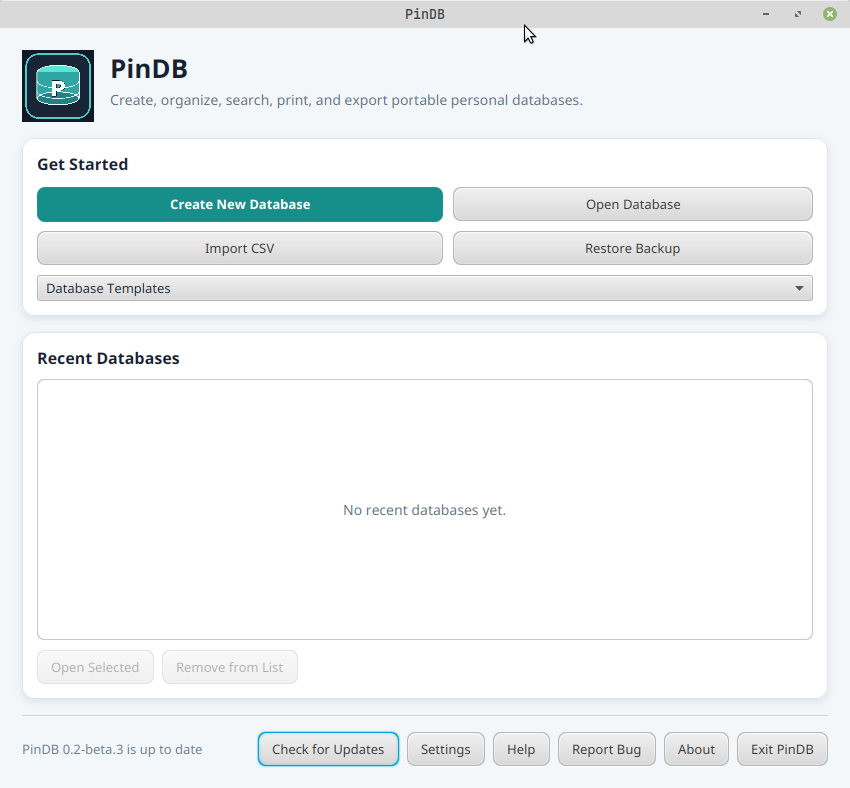
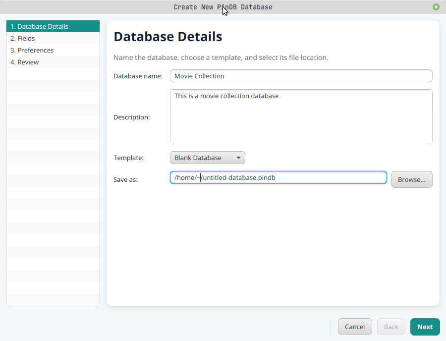
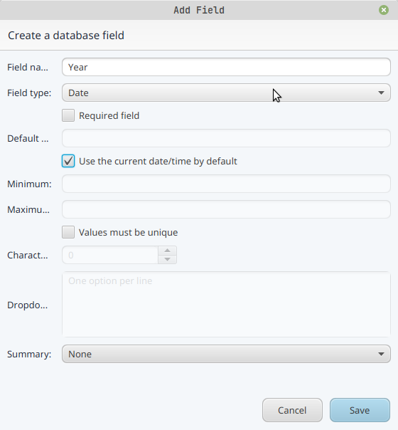
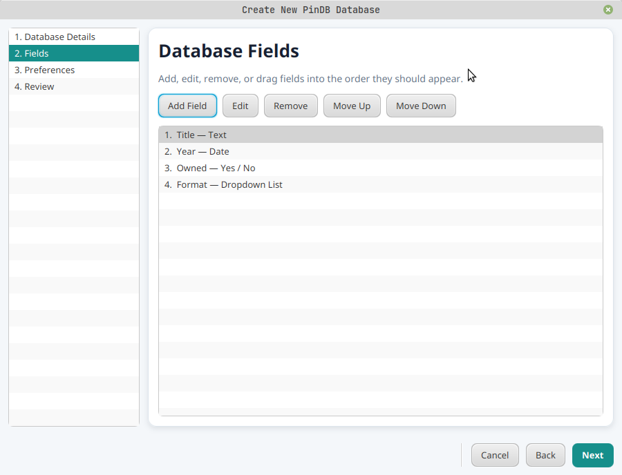
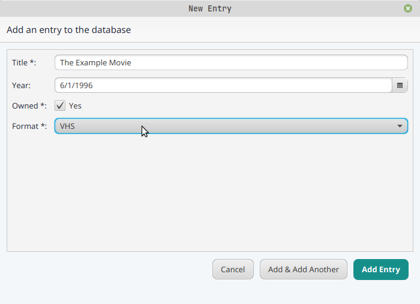
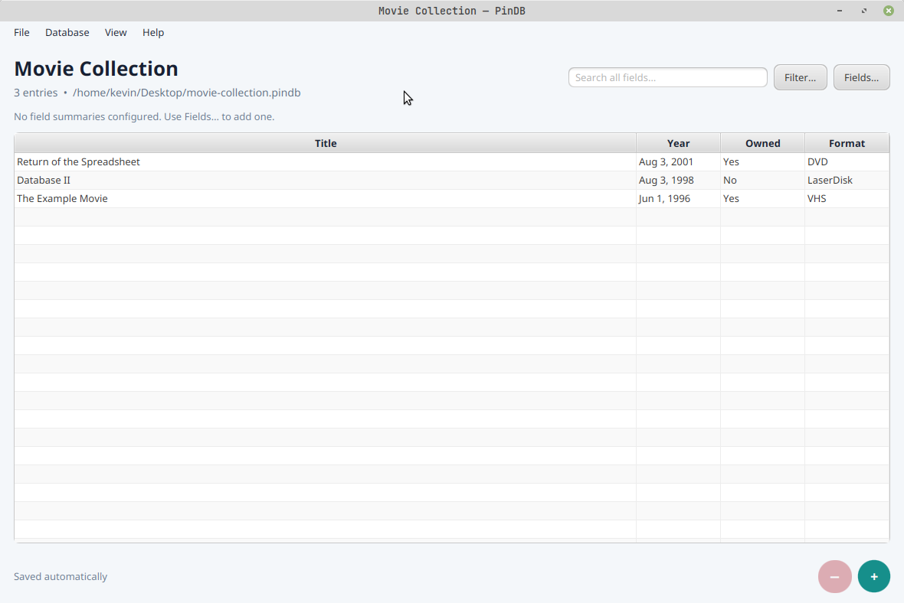
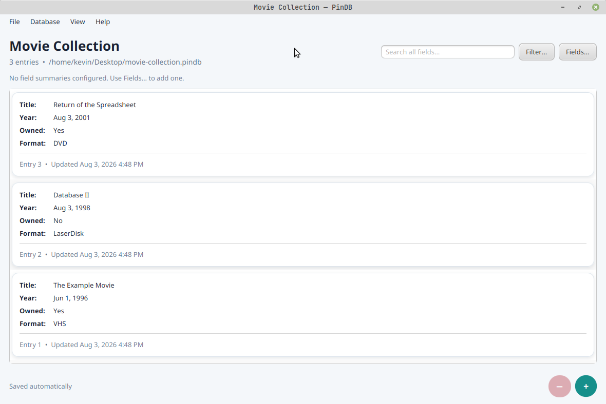
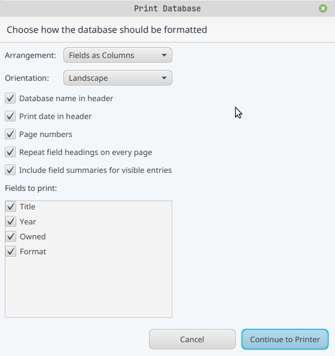
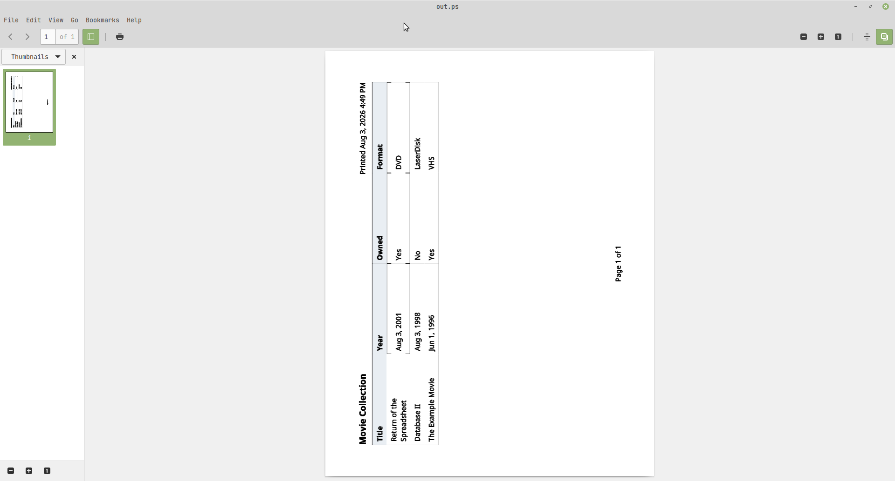

Screenshot Gallery
See PinDB in action—from creating a database to printing its records.
The screenshots below show the current Linux version of PinDB. Select any image to open the original full-size PNG in a new browser tab.

The PinDB launcher with database creation, opening, CSV import, backup restoration, recent databases, updates, settings, help, bug reporting, and About controls.
Click the image to open the full-size screenshot.

The first database-creation step for entering a name, description, template, and save location.
Click the image to open the full-size screenshot.

The field editor showing date-field options, validation settings, default values, and summaries.
Click the image to open the full-size screenshot.

The database field-management step with example Title, Year, Owned, and Format fields.
Click the image to open the full-size screenshot.

The New Entry window with text, date, Yes/No, and dropdown values.
Click the image to open the full-size screenshot.

A movie collection displayed in PinDB's spreadsheet-style table view.
Click the image to open the full-size screenshot.

The same movie collection displayed as readable record cards.
Click the image to open the full-size screenshot.

The Print Database dialog with layout, orientation, heading, summary, and field-selection options.
Click the image to open the full-size screenshot.

A landscape print preview generated from the example movie collection.
Click the image to open the full-size screenshot.